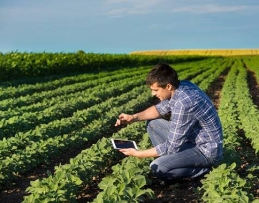
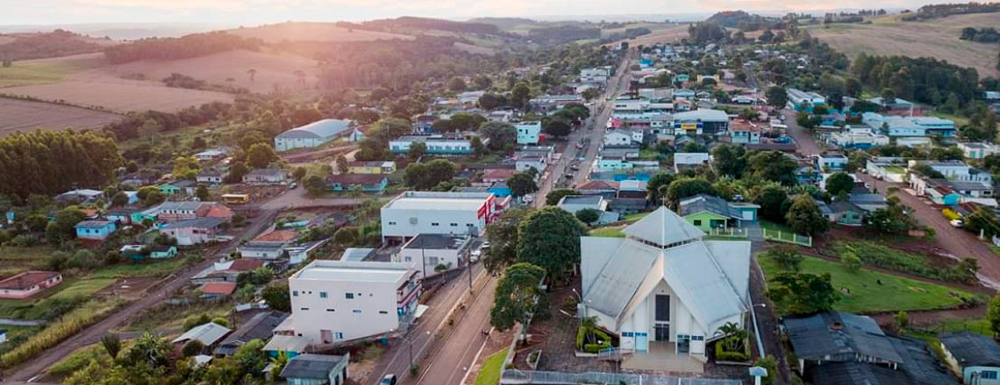

O Agronegócio em Nova Tebas: Tradição, Sustentabilidade e Força Econômica
O agronegócio é a principal força econômica de Nova Tebas, município localizado na região Central do Paraná. O setor destaca-se pela forte presença da agricultura familiar, que compõe cerca de 85% das propriedades rurais locais, gerando renda direta, movimentando o comércio e promovendo o desenvolvimento sustentável.
Bem-vindo à página dedicada ao coração econômico de Nova Tebas! Nossa terra é reconhecida pela riqueza de seu solo, pelo clima propício e, acima de tudo, pela dedicação do produtor rural. Com uma forte base na agricultura familiar, o município une tradição e inovação para alimentar famílias e impulsionar o desenvolvimento de toda a região.

Pilares da Nossa Produção
O ecossistema rural de Nova Tebas é diversificado e equilibrado, dividindo-se em importantes cadeias produtivas. Clique nos blocos abaixo para conhecer cada uma:
Um dos maiores motores da economia familiar novatebense. Programas municipais de incentivo, como o Pró Leite, promovem o melhoramento genético e a assistência técnica, garantindo alta produtividade e qualidade do leite entregue aos laticínios da região.
Grandes e médias extensões de terra dedicadas ao cultivo de culturas fortes no estado, como a soja e o milho, que abastecem o mercado nacional e as cooperativas parceiras.
Manejo estratégico de rebanhos bovinos, gerando carne de excelente qualidade por meio de pastagens bem aproveitadas.
Nova Tebas ganhou destaque regional com a agroindustrialização de frutas e polpas orgânicas, liderada por cooperativas locais (como a Cooperatvama no distrito de Poema). O modelo associa tecnologia sustentável, como o uso de energia solar e captação de água da chuva, gerando alto valor agregado.
Diversificação que inclui a produção local de ovos comerciais, panificados e hortaliças certificados pelo Serviço de Inspeção Municipal (SIM), abrindo portas para novos mercados locais e regionais.

O Valor da Agricultura Familiar
Cerca de 85% das propriedades rurais de Nova Tebas operam sob o regime familiar. Esse modelo não apenas fixa o homem no campo, mas também garante a segurança alimentar do município e fortalece cooperativas essenciais (como a Coopertebas). O incentivo à sucessão hereditária e ao cooperativismo faz com que as novas gerações continuem inovando no agronegócio local.
Inovação e Futuro no Campo
Nova Tebas investe constantemente em parcerias com órgãos de extensão rural (como o IDR-Paraná e o Sebrae) para levar capacitação técnica ao campo. O foco do município está em alinhar a alta produtividade com as exigências do mercado moderno: respeito ao meio ambiente, transição energética e manejo inteligente do solo.

Participe Conosco
Venha conhecer melhor Nova Tebas. Inscreva-se no nosso seminário on-line sobre o Agro sustentável em nosso município.
Deixe seu Comentário
Compartilhe suas ideias sobre a união entre a produção agrícola e a conservação ambiental.